python -m a4.main --config-name=torus
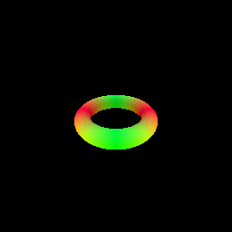
This should save part_1.gif in the `images' folder. Please include this in your submission along with a short writeup describing your implementation.
z_vals) is maintained to keep track of the distance from the origins for sampling points.z_vals) zero in the direction of rays along each pixel (given by directions), we calculate the points.z_vals.max_iters) or till all the distances are below some threshold (eps).python -m a4.main --config-name=points
| Point Cloud Input | Neural Surface Mesh |
|---|---|
|
|
Loss
There are 3 components to this loss
Points loss - Considering that all the ground truth points should lie on the surface, the average distance of these points from the nearest surface as outputted by the model is the first component. In order to obtain my best result, I had to multiply this with a weight < 1 (used the same one as inter weight). Without this weight, the model seemed to overfit during training resulting in disjointed/lumpy mesh as can be seen below.
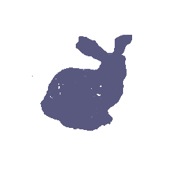
Distance loss - This ensures that not all distances go to 0 by taking the exponential values of the distances. To be honest, I tried removing this to see the impact but couldn't see a big difference in the final results or the losses. However, kept it in cause it wasn't doing any harm and logically it makes sense. Potentially, could try increasing the weight to see its impact.
Eikonal loss - This ensures that the norm of the gradient of the distances with respect to the points is close to 1. To be honest, I wasn't sure about the intuition behind this constraint. But after reading parts of Implicit Geometric Regularization for Learning Shapes, it started to make sense. I believe this constraint helps ensure that the SDF learned by the model is a plausible one. Considering that the main constraint while training a model to learn the SDF is the Points Loss, it is highly likely that the model could learn some random SDF that is 0 for the GT points but is arbitrary elsewhere. Hence this constraint helps provide a smoother SDF as a consequence of the plane reproduction property.
| Layers | Neruons | Iterations | Weighted Point Loss | Results |
|---|---|---|---|---|
| 6 | 128 | 5k | No | 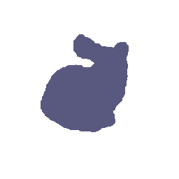 |
| 6 | 128 | 10k | No | |
| 6 | 256 | 5k | No | 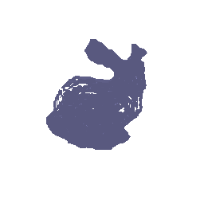 |
| 6 | 128 | 10k | Yes | 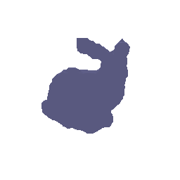 |
| 6 | 128 | 10k | Yes | |
| 7 | 128 | 5k | No |  |
| 7 | 128 | 10k | No |  |
| 7 | 256 | 10k | Yes |  |
| 8 | 128 | 5k | No |  |
| 8 | 256 | 10k | No |  |
python -m a4.main --config-name=volsdf

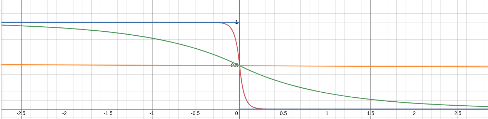
As can be seen above and in the formula, beta controls the sharpness of the transition from minimum to maximum. For higher values of beta, this transition is extremely gradual. Thus, for a beta close to infinity, the curve would be a line at y = 0.5. For smaller values of beta, the transition would be instantaneous. Thus, for a beta very close to 0, the function would essentially be a square wave.
How does high beta bias your learned SDF? What about low beta?
| Beta Value | Geometry | Colored Model |
|---|---|---|
| Low (1e-3) | 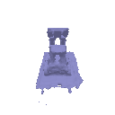 | 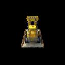 |
| Default (0.05) |  |
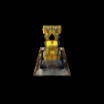 |
| High (1) | 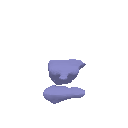 | 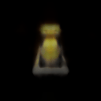 |
Would an SDF be easier to train with volume rendering and low beta or high beta? Why?
Would you be more likely to learn an accurate surface with high beta or low beta? Why?
| Geometry | Colored Model |
|---|---|
 |
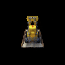 |
For the above results, I had alpha = 10 and beta = 0.05. I believe this worked well because the beta is low but not too low where in the model can't train properly and ends up learning some unnecessary high frequency details leading to generalization issues.
Defined a new class MarvelCubeSDF to try and recreate the following artifact from the No Way Home movie
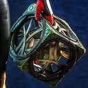
# Single
python -m a4.main --config-name=marvel

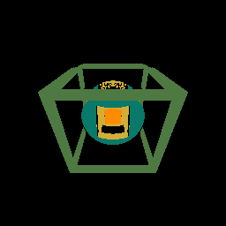
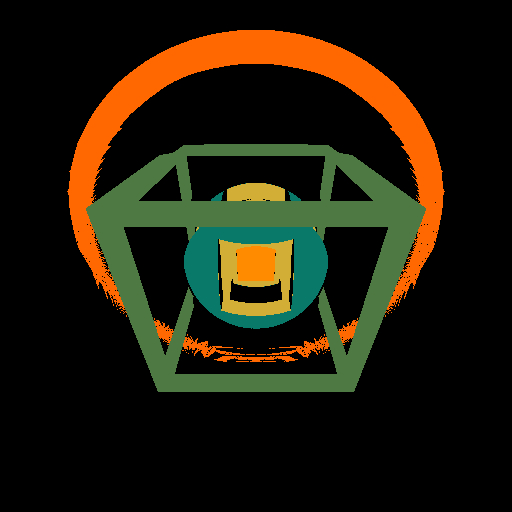
The above has 4 visible and 17 invisible shapes.
Not sure if this counted towards the 20 shapes requirements, defined another class TrippySDF to replicate 5 of these leading to 20 visible and 85 invisible shapes.
# Multiple
python -m a4.main --config-name=trippy
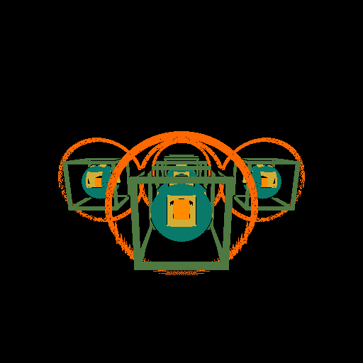
| # Images | Geometry | Colored Model |
|---|---|---|
| 10 |  |
 |
| 25 | 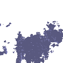 |  |
| 75 |  |
 |
| 100 | |
# For Naive SDF to Density function
python -m a4.main --config-name=volsdf_naive
| s | Geometry | Colored Model |
|---|---|---|
| 5 | 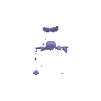 |  |
| 25 | 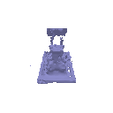 | 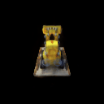 |
# For Exponential SDF to Density function
python -m a4.main --config-name=volsdf_exp

| Beta | Geometry | Colored Model |
|---|---|---|
| 0.05 | 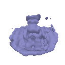 |  |
| 1 | 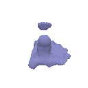 |  |